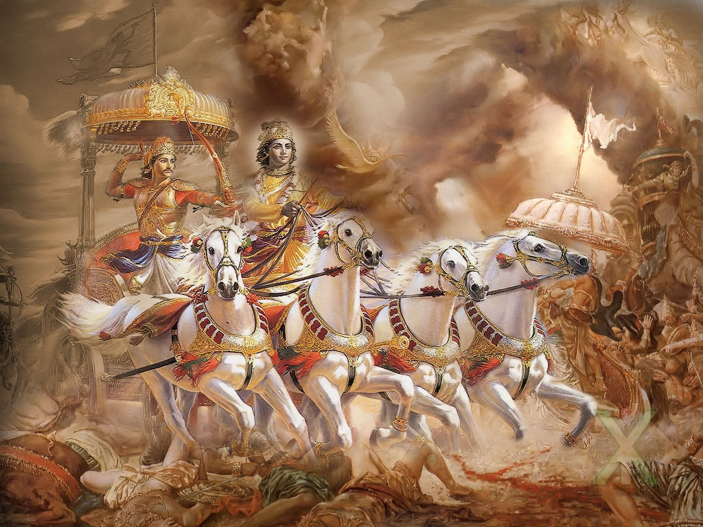
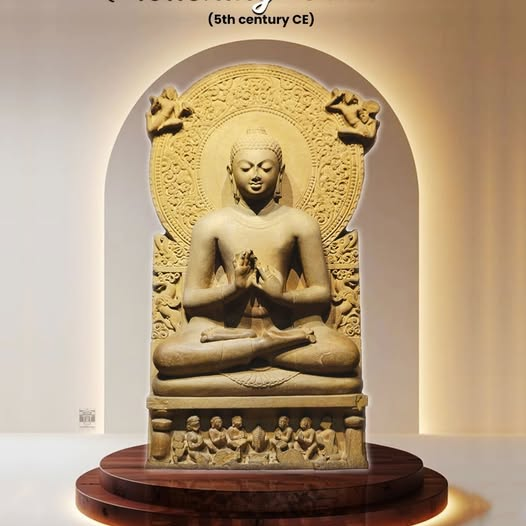
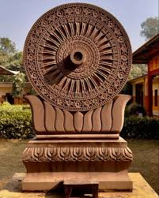
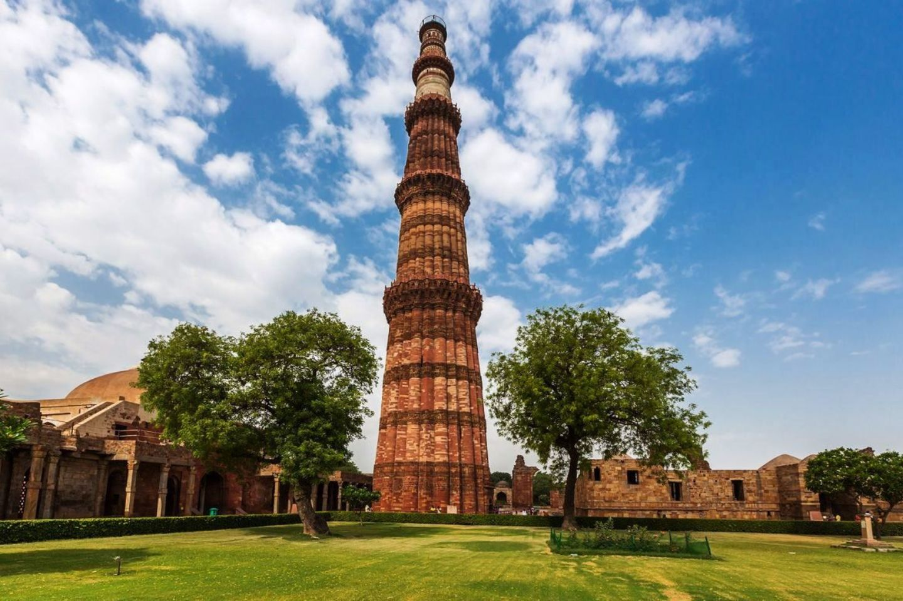
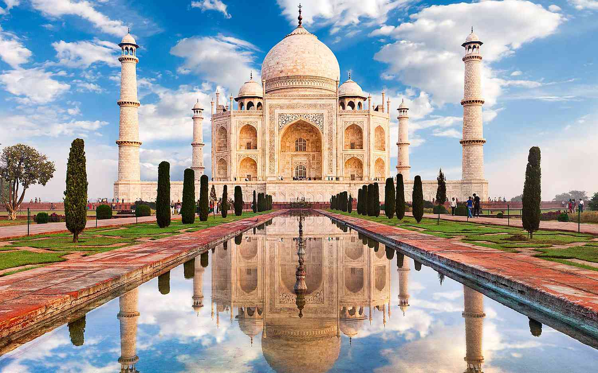
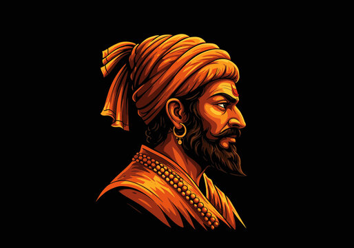
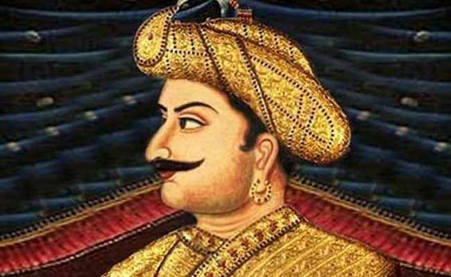
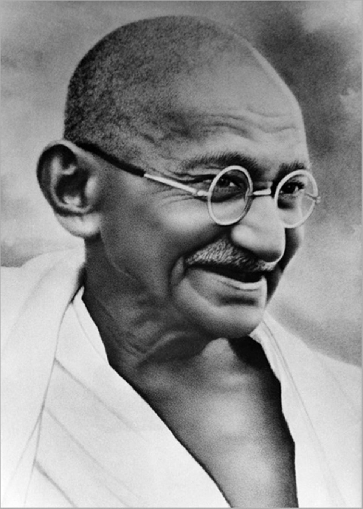

A Civilisation Through the Ages
Explore India's complete historical journey — from Vedic sages and warrior kings to Mughal emperors and freedom fighters — in chronological detail.
Indus
Vedic
Kingdoms
Maurya
Gupta
Medieval
Delhi
Mughal
Maratha
British
Freedom
Republic
Modern
The Indus Valley Civilisation (Harappan)
The Indus Valley Civilisation — also called the Harappan Civilisation — was one of the three earliest urban civilisations in the world alongside Mesopotamia and Ancient Egypt, and the largest of the three by area, spanning over 1.25 million km² across modern-day Pakistan, northwest India, and Afghanistan. It emerged around 3300 BCE in the Bronze Age and flourished from approximately 2600–1900 BCE.
At its peak, cities like Mohenjo-daro (in Sindh) and Harappa (in Punjab) housed populations of 30,000–50,000. These were extraordinarily sophisticated urban centres: they featured grid-planned streets, the world's first known urban sanitation and sewage systems, multi-storey brick houses with private bathrooms, public granaries, and a remarkable standardisation of weights and measures across thousands of kilometres. The "Great Bath" of Mohenjo-daro is considered among the earliest public water tanks in history.
The Harappans had a writing system (the Indus Script) with over 400 known signs, which remains undeciphered to this day. Trade networks extended to Mesopotamia via the Persian Gulf. Artefacts of seals, jewellery, terracotta figurines (including the famous "Dancing Girl" bronze), and toy carts reveal a rich cultural life. Around 1900 BCE the mature civilisation declined — causes debated include climate change, shifts in the monsoon, and the drying of the Ghaggar-Hakra river (possibly the Vedic Saraswati).

Ruins of Mohenjo-daro, Sindh — one of the world's first planned cities, c. 2500 BCE
The cities of the Indus were built with a sophistication that would not be matched in Europe for another two thousand years.
— Sir Mortimer Wheeler, archaeologist who excavated Harappa (1944)The Vedic Period — Gods, Sages & the Birth of Dharma
The Vedic Period marks the composition of the world's oldest surviving scriptures — the four Vedas: Rigveda, Samaveda, Yajurveda, and Atharvaveda. The Rigveda (~1500 BCE) is the oldest known religious text still in active use, containing 1,028 hymns addressed to deities such as Indra (king of gods, thunder), Agni (fire), Varuna (cosmic order), Surya (sun), and Soma (sacred drink). The Vedas were composed in Sanskrit and transmitted orally with extraordinary precision for centuries before being written down.
The later Vedic period saw the composition of the Upanishads (~800–500 BCE) — philosophical texts exploring the nature of the Self (Atman), Ultimate Reality (Brahman), karma, dharma, and liberation (moksha). These became the foundation of Indian philosophy and influenced global thought. Alongside emerged the great epics: the Mahabharata (the longest poem in world literature, ~1.8 million words, including the Bhagavad Gita) and the Ramayana (the story of Rama and Sita, foundational to Hindu culture across South and Southeast Asia).
The Vedic social structure introduced the varna system (Brahmin, Kshatriya, Vaishya, Shudra). Vedic rituals (yajnas) were elaborate fire sacrifices. The Ashvamedha (horse sacrifice) was performed by kings to assert sovereignty. The period saw the gradual shift from nomadic pastoralism to settled agriculture in the Gangetic plains, establishing the socio-cultural foundations of Hindu civilisation.

The Kurukshetra War from the Mahabharata — Krishna counsels Arjuna, depicted in the Bhagavad Gita
You have a right to perform your prescribed duties, but you are not entitled to the fruits of your actions. Never consider yourself the cause of the results of your activities, and never be attached to not doing your duty.
— Lord Krishna, Bhagavad Gita, Chapter 2, Verse 47The Sixteen Mahajanapadas, Buddha & the Age of Enlightenment
By 600 BCE, northern India was divided into sixteen Mahajanapadas (great kingdoms) — among them Magadha, Kosala, Kashi (Varanasi), Vajji, Avanti, and Gandhara. These were governed as kingdoms or oligarchic republics (ganas). Of these, Magadha (in modern Bihar) emerged dominant, later forming the base of India's first great empire.
This period witnessed two of history's most influential spiritual awakenings. Siddhartha Gautama (~563–483 BCE), born a prince of the Shakya clan in Lumbini (modern Nepal), renounced worldly life and after years of ascetic practice attained enlightenment under the Bodhi tree at Bodh Gaya. As the Buddha ("The Awakened One"), he taught the Four Noble Truths and the Eightfold Path to end suffering (dukkha). Buddhism eventually spread across Asia and today has ~500 million adherents worldwide.
Simultaneously, Vardhamana Mahavira (~599–527 BCE) revitalised and systematised Jainism, preaching radical non-violence (ahimsa), truthfulness (satya), and non-possessiveness (aparigraha) — principles that would later deeply influence Mahatma Gandhi. The period also saw the rise of Ajatashatru of Magadha and the early philosophical schools of the Charvaka (materialists) and the Ajivikas.

The famous Buddha statue from Sarnath — site of the first sermon (Dhammacakkappavattana Sutta)
Peace comes from within. Do not seek it without.
— Attributed to Gautama BuddhaThe Maurya Empire — Chandragupta, Bindusara & Emperor Ashoka
Chandragupta Maurya (r. 321–297 BCE), guided by his mentor-strategist Chanakya (Kautilya), overthrew the Nanda dynasty of Magadha and founded the Maurya Empire — the first pan-Indian empire. He repelled Alexander the Great's general Seleucus Nicator (~305 BCE) and expanded the empire from Afghanistan to Bengal, from the Himalayas to the Deccan. In his later years Chandragupta abdicated and became a Jain monk, reportedly fasting to death in Karnataka.
His grandson Ashoka the Great (r. 268–232 BCE) expanded the empire to its maximum extent — encompassing nearly the entire Indian subcontinent. But the bloody Kalinga War (~261 BCE), in which 100,000 soldiers died and 150,000 were deported, horrified Ashoka so profoundly that he converted to Buddhism and renounced further conquest. He transformed into history's most remarkable example of a conqueror becoming a champion of peace. Ashoka spread Buddhism throughout Asia, sent missionaries to Sri Lanka (his son Mahinda and daughter Sanghamitta), Central Asia, and the Hellenistic world. His edicts, inscribed on pillars and rocks across the empire, proclaimed tolerance, welfare of people and animals, and non-violence. The Ashoka Chakra (24-spoked wheel) from his Lion Capital at Sarnath is today the centrepiece of India's national flag.

The Ashoka Chakra — 24-spoked Dhamma Wheel from the Lion Capital, Sarnath. Now adorns India's national flag
All men are my children. What I desire for my own children — their welfare and happiness — that I desire for all men.
— Emperor Ashoka, Rock Edict I, c. 257 BCEThe Gupta Empire — India's Golden Age
The Gupta Empire, founded by Sri Gupta and reaching its zenith under Chandragupta I (r. 319–335 CE), Samudragupta (r. 335–375 CE, "the Napoleon of India") and Chandragupta II Vikramaditya (r. 375–415 CE), ushered in India's classical Golden Age. Sanskrit literature, Hindu philosophy, and scientific inquiry flourished simultaneously across the empire stretching from the Indus to Bengal and from the Himalayas to the Narmada.
The mathematician-astronomer Aryabhata (476–550 CE) was arguably the greatest scientific mind of his era: he correctly calculated π (pi) to 4 decimal places, proposed that the Earth rotates on its own axis (1,000 years before Copernicus), calculated the length of the solar year as 365.358 days, and worked on algebra and trigonometry. Brahmagupta formalised the rules for arithmetic with zero. The decimal system and positional notation invented in India during this period later transformed mathematics worldwide via Arab transmission.
The poet-playwright Kalidasa composed timeless classics including Abhijnanashakuntalam (which Goethe later called the finest drama ever written) and Meghaduta. The Nalanda University (founded ~450 CE) in Bihar became the world's first residential university, hosting 10,000 students and 2,000 teachers from across Asia. The Gupta period also produced the Kamasutra (Vatsyayana) and Varahamihira's encyclopedic Brihat Samhita. The cave frescoes of Ajanta were painted in this era.

Padmapani Bodhisattva fresco, Ajanta Cave 1, c. 5th century CE — masterpiece of Gupta-era Buddhist art (Copyrights Britanica)
The earth is round. It rotates on its own axis. What we call sunrise and sunset — these are phenomena of the earth's own motion.
— Aryabhata, Aryabhatiya, 499 CE — ~1,000 years before CopernicusPallava, Chalukya, Chola & Rajput Kingdoms
After the Gupta decline, India fractured into powerful regional kingdoms that each left indelible cultural legacies. In the Deccan, the Chalukyas of Badami (550–753 CE) under Pulakesi II famously halted the northward advance of Harsha of Kanauj (606–647 CE) — the last great northern emperor. The Pallavas of Kanchipuram (275–897 CE) under Narasimhavarman I defeated the Chalukyas and built the extraordinary Shore Temple and Mahabalipuram rock-cut sculptures in Tamil Nadu.
The Chola Empire of Tamil Nadu reached its zenith under Raja Raja Chola I (r. 985–1014 CE) and his son Rajendra Chola I (r. 1014–1044 CE). Rajendra Chola led a naval expedition all the way to the Malay Peninsula and Sumatra — the most dramatic overseas campaign in Indian history — asserting Indian cultural and commercial dominance across maritime Southeast Asia. The Cholas built the magnificent Brihadeeswara Temple at Thanjavur, a UNESCO World Heritage Site.
In northern India, the Rajput clans — Pratiharas, Paramaras, Chandellas, Chahamanas — dominated from the 7th to 12th centuries. They commissioned extraordinary temples: the Khajuraho temples (Chandellas, ~950–1050 CE), the Sun Temple at Modhera, and the Qutb Minar complex site's earlier temples. Prithviraj Chauhan (1149–1192 CE), the last Hindu ruler of Delhi, defeated Mohammed of Ghor at the First Battle of Tarain (1191) but was defeated and killed at the Second Battle (1192), ending Hindu supremacy in northern India.

Brihadeeswara Temple, Thanjavur — built by Raja Raja Chola I in 1010 CE; 66 metres tall (Copyrights: Britanica)
The Cholas gave us maritime empire, monumental architecture, and the finest classical dance — Bharatanatyam. Their legacy lives in every Tamil home today.
— T.V. Mahalingam, historian of South IndiaThe Delhi Sultanate — Five Dynasties, 320 Years
The Delhi Sultanate (1206–1526) was established by Qutb-ud-din Aibak, a former slave-general of Mohammed of Ghor, founding the Mamluk (Slave) Dynasty. The Sultanate spanned five dynasties — Mamluk, Khalji, Tughlaq, Sayyid, and Lodi — and at its peak controlled most of the Indian subcontinent. It repelled the Mongol invasions led by Genghis Khan's successors (especially under Alauddin Khalji), which ravaged Persia, Central Asia, and China but were stopped at India's northwest border.
Alauddin Khalji (r. 1296–1316) was the most powerful Delhi Sultan: he conquered Gujarat, Rajputana, and most of the Deccan (through his general Malik Kafur), introduced sweeping market reforms controlling prices of goods, and repelled four major Mongol invasions. Muhammad bin Tughlaq was notorious for ambitious but failed experiments — moving the capital from Delhi to Daulatabad and introducing token currency. Firuz Shah Tughlaq built canals, hospitals, and madrasas. The Sultanate was fatally weakened by Timur's devastating invasion of 1398, which sacked Delhi and depopulated the region.
The period saw profound synthesis of Persian-Islamic and Indian cultures: the Quwwat-ul-Islam mosque and the Qutb Minar (73m, tallest brick minaret in the world), built with material from demolished Hindu temples, epitomised this complex interaction. The Sufi movement — especially the Chishti order of saints like Hazrat Nizamuddin Auliya and Amir Khusrau — helped bridge Hindu and Muslim communities.

The Qutb Minar, Delhi — 73 metres tall; begun 1193 CE by Qutb-ud-din Aibak; tallest brick minaret in the world
I am the parrot of India. If you want to know the mysteries of Hindustan, ask me.
— Amir Khusrau, Sufi poet-musician at the court of Delhi, c. 1300 CEThe Mughal Empire — From Babur to Bahadur Shah Zafar
Babur, a descendant of Timur and Genghis Khan, defeated Ibrahim Lodi at the First Battle of Panipat (21 April 1526) using artillery — the first decisive use of gunpowder in Indian warfare — founding the Mughal Empire. His grandson Akbar the Great (r. 1556–1605) was the empire's greatest consolidator: he unified most of the subcontinent, abolished the jizya (poll tax on non-Muslims), held interfaith debates at his Ibadat Khana, and created Din-i-Ilahi — a syncretic faith blending Islam, Hinduism, Zoroastrianism and Christianity. He married Jodha Bai, a Rajput princess, embodying Hindu-Muslim synthesis.
The reign of Shah Jahan (r. 1628–1658) produced the crowning glory of Mughal architecture: the Taj Mahal, built 1632–1653 in memory of his beloved wife Mumtaz Mahal, employing 20,000 workers and artisans from across the world. It is considered the finest example of Mughal architecture and is today the world's most visited monument. Shah Jahan also built the Red Fort and Jama Masjid in Delhi and the Pearl Mosque in Agra.
Aurangzeb (r. 1658–1707) expanded the empire to its greatest territorial extent (covering ~4 million km²) but his strict Islamic policies — reimposing jizya, demolishing some Hindu temples — alienated the Rajputs, Marathas, Sikhs, and Deccan sultans, sowing the seeds of Mughal decline. After his death, the empire fragmented rapidly, weakened by the Nadir Shah's sack of Delhi (1739), in which the Peacock Throne and Koh-i-Noor diamond were looted, and the Ahmad Shah Durrani's invasions. The last Mughal emperor Bahadur Shah Zafar was exiled by the British after the 1857 Uprising.

The Taj Mahal, Agra — built by Shah Jahan 1632–1653 in memory of Mumtaz Mahal; New 7 Wonders of the World
Should guilty seek asylum here, like one pardoned, he becomes free from sin. Should the sinner make his way to this mansion, all his past sins are to be washed away.
— Quranic inscription on the Taj Mahal gateway, by Shah Jahan, c. 1648Chhatrapati Shivaji & the Maratha Empire
Chhatrapati Shivaji Maharaj (1630–1680) is one of India's greatest military geniuses and nation-builders. Born of a Maratha chieftain's family in the Sahyadri hills, he carved out an independent kingdom from the Bijapur Sultanate and the Mughal Empire through guerrilla warfare (ganimi kava), innovative use of terrain, and an extraordinary navy. He was formally crowned at Raigad Fort on 6 June 1674, creating the Maratha Empire — the first Hindu empire in centuries to challenge Mughal hegemony.
Shivaji built an efficient administrative system, maintained naval supremacy with a fleet of 200 warships along the Konkan coast, respected all religions (he reportedly protected mosques and Muslim women during raids), and established the concept of Swarajya (self-rule). His confrontation with Aurangzeb — including the dramatic escape from Agra in 1666 hidden in sweet-boxes — became legendary. The Maratha Confederacy expanded under the Peshwas (Prime Ministers) of Pune, especially Bajirao I (r. 1720–1740), who remained undefeated in 41 battles. At its peak the Maratha Confederacy controlled most of the Indian subcontinent, from Attock in the northwest to Odisha in the east.
The Third Battle of Panipat (14 January 1761) between the Marathas and Ahmad Shah Durrani's Afghan forces resulted in a devastating Maratha defeat — over 40,000 soldiers killed — ending Maratha dreams of pan-Indian hegemony. They were ultimately subjugated by the British in the Third Anglo-Maratha War (1817–18).

Chhatrapati Shivaji Maharaj — founder of the Maratha Empire and father of the Indian Navy
Do not think of the enemy as powerful. Have faith in God, courage in yourself, and the hills are yours.
— Chhatrapati Shivaji MaharajThe British East India Company & Colonial Conquest
The British East India Company (EIC), founded in 1600 as a trading venture, transformed into a colonial power through war and diplomacy. The Battle of Plassey (23 June 1757) was the pivot: Robert Clive's EIC army defeated Nawab Siraj ud-Daulah of Bengal through treachery (bribing his general Mir Jafar), establishing British political control over Bengal — the richest province in the subcontinent. The Battle of Buxar (1764) consolidated this, giving the EIC the diwani (revenue collection rights) of Bengal, Bihar and Orissa.
The EIC systematically expanded through the Subsidiary Alliance (lords surrendering sovereignty in exchange for British military protection) and the Doctrine of Lapse (Lord Dalhousie's policy of annexing states without male heirs). Tipu Sultan, "the Tiger of Mysore" and one of the most capable Indian rulers of the era, fought four Anglo-Mysore Wars before being killed defending his capital Seringapatam in 1799. The Marathas were defeated in three wars (1775–1818). The Sikhs, under Maharaja Ranjit Singh (the "Lion of Punjab"), maintained independence until his death in 1839, after which the Punjab was annexed in 1849.
British rule caused devastating famines: the Great Bengal Famine of 1770 killed an estimated 10 million people (one-third of Bengal's population) — a direct result of EIC revenue extraction policies. A total of 30–50 million Indians died in famines under British rule between 1850–1900 according to historians like Mike Davis. The colonial economy systematically deindustrialised India: India's share of world manufacturing fell from ~25% in 1750 to 2% by 1900.

Tipu Sultan of Mysore — "Tiger of Mysore"; first to use iron war rockets; killed defending Seringapatam, 1799
It is better to live one day as a lion than a thousand years as a sheep.
— Attributed to Tipu Sultan of MysoreThe Freedom Struggle — From 1857 to Independence
The Revolt of 1857 (called the Sepoy Mutiny by the British, the First War of Independence by Indians) began on 10 May 1857 in Meerut. Sepoys (Indian soldiers) rebelled against the introduction of greased cartridges for the Enfield rifle, which were rumoured to contain beef and pork fat offensive to Hindu and Muslim soldiers. The revolt spread across northern and central India under leaders including Rani Lakshmibai of Jhansi (who died fighting), Tantia Tope, and the Mughal emperor Bahadur Shah Zafar. Though suppressed by 1858, it ended the EIC's rule — the British Crown assumed direct sovereignty over India via the Government of India Act 1858.
The Indian National Congress was founded in 1885. The independence movement entered its decisive phase with Mahatma Gandhi's return to India from South Africa in 1915. Gandhi transformed the Congress into a mass movement, deploying Satyagraha (truth-force, non-violent resistance): the Non-Cooperation Movement (1920–22), the Civil Disobedience Movement and the iconic Salt March (240 miles, 12 March–6 April 1930), and the Quit India Movement (1942). Alongside, Bal Gangadhar Tilak ("Swaraj is my birthright"), Subhas Chandra Bose (who formed the Indian National Army with Japanese support to fight the British from the east), and Bhagat Singh (revolutionary executed in 1931 at age 23) inspired millions.
B.R. Ambedkar led the Dalit liberation movement, later drafting the Indian Constitution. The Jallianwala Bagh Massacre (13 April 1919) — in which General Dyer ordered troops to fire on 20,000 unarmed civilians celebrating Baisakhi, killing at least 379–1,000+ — turned moderate Indian opinion permanently against British rule. India achieved independence at midnight on 14–15 August 1947 through Partition into India and Pakistan — one of history's largest forced migrations, displacing 10–20 million people and causing 200,000–2 million deaths in communal violence.

Mahatma Gandhi — architect of non-violent resistance; led India to independence through Satyagraha
At the stroke of the midnight hour, when the world sleeps, India will awake to life and freedom. A moment comes, which comes but rarely in history, when we step out from the old to the new.
— Jawaharlal Nehru, "Tryst with Destiny" speech, 14–15 August 1947The Republic of India — Constitution, Wars & Green Revolution
India became a republic on 26 January 1950 when the Constitution drafted by B.R. Ambedkar came into force — the world's longest written constitution, guaranteeing fundamental rights and establishing a secular federal democracy. The first general elections in 1951–52 saw 173 million voters participate — the largest democratic exercise in history at that time. Nehru's vision of a mixed economy with planned industrialisation through Five-Year Plans created institutions like the IITs, ISRO, BARC, and heavy industries like TISCO and Bhilai Steel Plant.
Independent India faced immediate crises: Integration of 565 Princely States (masterminded by Sardar Vallabhbhai Patel), the Kashmir War (1947–48) which left the Kashmir dispute unresolved, the Sino-Indian War (1962) in which China inflicted a humiliating defeat, and the Indo-Pakistani Wars of 1947, 1965, and 1971. The 1971 War (under PM Indira Gandhi and General Sam Manekshaw) resulted in the liberation of Bangladesh, with Pakistan's surrender of 93,000 troops being the largest military surrender since WWII. India conducted its first nuclear test (Smiling Buddha) in 1974 at Pokhran.
The Green Revolution (1960s–70s), led by scientist M.S. Swaminathan, transformed India from a food-deficit nation to self-sufficiency in wheat and rice. The White Revolution (Operation Flood) under Verghese Kurien made India the world's largest milk producer. The period also included the dark chapter of the Emergency (1975–77) declared by Indira Gandhi, the Punjab insurgency, Operation Blue Star (1984), Indira Gandhi's assassination, and the Bhopal Gas Tragedy (1984) — the world's worst industrial disaster, killing 3,700–16,000 people.

Jawaharlal Nehru — first Prime Minister of India; architect of Indian democracy and Non-Aligned Movement
The service of India means the service of millions who suffer. It means the ending of poverty and ignorance and disease and inequality of opportunity.
— Jawaharlal Nehru, 1947Modern India — Liberalisation, Space & Global Influence
The 1991 economic liberalisation under PM Narasimha Rao and Finance Minister Manmohan Singh — forced by a balance-of-payments crisis that required India to airlift gold reserves to London as collateral — dismantled the "Licence Raj," opened up foreign investment, and unleashed sustained economic growth of 6–9% annually. The IT and software sector boomed, with Bangalore becoming Asia's Silicon Valley. India's economy grew from $270 billion in 1991 to over $3.7 trillion today (nominal GDP), making it the 5th largest economy in the world and on track to become 3rd by 2030.
India's space programme (ISRO) achieved remarkable milestones at a fraction of Western costs: Chandrayaan-1 (2008) discovered water molecules on the Moon; Mangalyaan (Mars Orbiter Mission, 2014) reached Mars on the first attempt at a record cost of ₹450 crore ($74 million) — less than the budget of the Hollywood film Gravity; and Chandrayaan-3 (August 2023) made India the first nation to land on the Moon's south pole, a region of prime scientific interest for water ice. The Pokhran II nuclear tests (Operation Shakti, 1998) under PM Vajpayee confirmed India as a nuclear weapons state. The Kargil War (1999) was won decisively against Pakistani intrusion.
21st-century India is defined by its demographic dividend (median age 28, youngest major economy), digital revolution (760 million internet users, world's largest digital payments ecosystem via UPI processing $2 trillion annually), and growing geopolitical weight in the G20, QUAD, BRICS, and SCO. Landmark domestic events include the 2016 demonetisation, the Goods and Services Tax (GST) reform (2017), the Ram Mandir consecration at Ayodhya (January 2024), and India hosting the G20 Presidency in 2023, with the historic agreement to include the African Union as a permanent member.

Chandrayaan-3 Vikram lander touches down on Moon's south pole, 23 August 2023 — India becomes the first nation to achieve this
India is not a developing country. India is a highly developed civilisation that had an unfortunate two centuries. We are returning to our natural place in the world.
— Shashi Tharoor, author & parliamentarian, Inglorious Empire (2017)